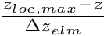
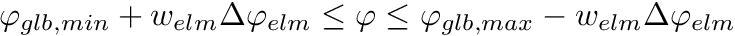
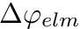

Module providing a class (point_cls) to handle points (e.g. receivers) More...
Data Types | |
| interface | point_cls |
| A class which handles points in Ses3d-NT. It is used as a base-class for receivers and sources. More... | |
Functions/Subroutines | |
| elemental type(point_cls) function | uninitialized_point_cls () |
| Structure constructor returning an uninitialized/empty point_cls object. More... | |
| type(point_cls) function | construct_point_cls (lat, lon, depth) |
| Constructs a point_cls object by passing latitude, longitude and dept. More... | |
| subroutine | print_point (self, unit) |
| Writes various information about a point - a point_cls object. More... | |
| elemental integer function | get_ex (self) |
| Returns the x/theta element index of that point. More... | |
| elemental integer function | get_ey (self) |
| Returns the y/phi element index of that point. More... | |
| elemental integer function | get_ez (self) |
| Returns the z/radial element index of that point. More... | |
| elemental logical function | equal_points (p1, p2) |
Compares two objects p1 and p2 of class point_cls. In case these objects are equal .TRUE. is returned otherwise .FALSE.. More... | |
| elemental logical function | uninitialized (self) |
| Checks if an object of point_cls class is initialized or not. More... | |
| elemental real(real_kind) function | get_lat (self) |
| Converts and returns the x/theta coordinate value into the corresponding latitude. More... | |
| elemental real(real_kind) function | get_lon (self) |
| Converts and returns the y/phi coordinate value into the corresponding longitude. More... | |
| elemental real(real_kind) function | get_depth (self) |
| Converts and returns the z/radial coordinate value into a depth value counting positive from the Earth's surface. More... | |
| pure real(real_kind) function, dimension(0:conf%lpd(), 0:conf%lpd(), 0:conf%lpd()) | get_vanderm (self) |
| Returns the Vandermonde-matrix. More... | |
| real(real_kind) elemental function | std_x (x) |
| Mapping from the passed local x/theta coordinate value onto the so called unit interval [-1,1]. More... | |
| real(real_kind) elemental function | std_y (y) |
| Mapping from the passed local y/phi coordinate value onto the so called unit interval [-1,1]. More... | |
| real(real_kind) elemental function | std_z (z) |
| Mapping from the passed local z/radial coordinate value onto the so called unit interval [-1,1]. More... | |
| elemental logical function | in_boundary (x, y, z) |
| Returns .TRUE. if the passed point (x,y,z) is located inside the relaxing boundary elements. More... | |
| elemental logical function | in_domain (x, y, z) |
| Returns .TRUE. if point (x,y,z) is located inside of the computational domain otherwise .FALSE. is the result. More... | |
| elemental logical function | in_rank (x, y, z) |
| Checks if the passed coordinates are inside the local MPI rank. Returns .TRUE. if the passed point (x,y,z) is located in this very MPI rank otherwise .FALSE. is the result. More... | |
| elemental integer function | elm_x_loc (x) |
| Returns the local x/theta element index corresponding to a points x/theta coordinate value. More... | |
| elemental integer function | elm_y_loc (y) |
| Returns the local y/phi element index corresponding to a points y/phi coordinate value. More... | |
| elemental integer function | elm_z_loc (z) |
| Returns the local z/radial-element index corresponding to a points r/radial coordinate value. More... | |
| elemental real(real_kind) function | interpolate_x (self) |
| Returns the interpolated x/theta coordinate of a point. More... | |
| elemental real(real_kind) function | interpolate_y (self) |
| Returns the interpolated y/phi coordinate of a point. More... | |
| elemental real(real_kind) function | interpolate_z (self) |
| Returns the interpolated z/radial coordinate of a point. More... | |
Detailed Description
Module providing a class (point_cls) to handle points (e.g. receivers)
Function/Subroutine Documentation
◆ construct_point_cls()
|
private |
Constructs a point_cls object by passing latitude, longitude and dept.
It covers a whole bunch of consistency checks as well as several pre- processing steps for making interpolation more efficient.
- Note
- If something goes wrong an uninitialized point_cls object is returned (see point_mod::uninitialized_point_cls() ).
- Todo:
- Write warnings to log-files
- Parameters
-
lat Latitude in [deg] lat Longitude in [deg] depth Depth in [m] (counting from parameters_mod::EARTH_RADIUS)
Definition at line 150 of file point.f90.
◆ elm_x_loc()
|
private |
Returns the local x/theta element index corresponding to a points x/theta coordinate value.
The index is determined as follows:
- Calculate the local offset:
- Divide it by the width of the element:
- Get the greatest integer less than or equal:
- Subtract if from the local number of elements:

where indicates the local MPI-rank,  denotes the local number of elements and stands for the radial coordinate value.
denotes the local number of elements and stands for the radial coordinate value.
- Todo:
- I do not understand why step 4 is necessary.
- Warning
- Assumes array indices counting from 0 to nx_loc_max
- If the point is not located in the local MPI rank the returned value is meaningless
- Parameters
-
x The x/theta coordinate value
- Returns
- Element index in x-direction with respect to the local MPI rank
◆ elm_y_loc()
|
private |
Returns the local y/phi element index corresponding to a points y/phi coordinate value.
The index is determined as follows:
- Calculate the local offset:
- Divide it by the width of the element:
- Get the greatest integer less than or equal:
- Subtract if from the local number of elements:
where indicates the local MPI-rank, denotes the local number of elements and stands for the radial coordinate value.
- Todo:
- I do not understand why step 4 is necessary.
- Warning
- Assumes array indices counting from 0 to ny_loc_max
- If the point is not located in the local MPI rank the returned value is meaningless
- Parameters
-
y The y/phi coordinate value
- Returns
- Element index in y-direction with respect to the local MPI rank
◆ elm_z_loc()
|
private |
Returns the local z/radial-element index corresponding to a points r/radial coordinate value.
The index is determined as follows:
- Calculate the local offset:
- Divide it by the width of the element: 
- Get the greatest integer less than or equal:
where  indicates the local MPI-rank and stands for the radial coordinate value.
indicates the local MPI-rank and stands for the radial coordinate value.
- Warning
- Assumes array indices counting from 0 to nz_loc_max
- z-coordinates are upside down
- If the point is not located in the local MPI rank the returned value is meaningless
- Parameters
-
z The r/radial coordinate value
- Returns
- Element index in z-direction with respect to the local MPI rank
◆ equal_points()
|
private |
Compares two objects p1 and p2 of class point_cls. In case these objects are equal .TRUE. is returned otherwise .FALSE..
- Note
- Two objects p1 and p2 are called identical or equal if all their components are equal:
- ex: x/theta element index
- ey: y/phi element index
- ez: z/radial element index
- vm: Vandermonde Maxrix
- Returns
- .TRUE. if p1 and p2 are identical otherwise .FALSE.
Definition at line 377 of file point.f90.
◆ get_depth()
| elemental real(real_kind) function point_mod::get_depth | ( | class(point_cls), intent(in) | self | ) |
Converts and returns the z/radial coordinate value into a depth value counting positive from the Earth's surface.
This function is implemented using:
- Note
- The radial coordinate value is interpolated in before hand to get precisely that very depth value - affected by FP rounding errors - which corresponds to the one which is uses during the simulation.
- Parameters
-
self Passed-object dummy of class point_cls
- Returns
- Depth value (counting from parameters_mod::earth_radius)
Definition at line 491 of file point.f90.
◆ get_ex()
|
private |
Returns the x/theta element index of that point.
To access the element a point is located in all three element indices , and are needed. To actually select values from one of Ses3d-NT's rank 6 fields say e.g.
f_loc(p%elm_x_loc(),p%elm_y_loc(),p%elm_z_loc(),:,:,:)
where p is an object of class point_cls. This returns an array of shape [0:lpd,0:lpd,0:lpd].
- Parameters
-
self Passed-object dummy of class point_cls
- Returns
- The x/theta element index
◆ get_ey()
|
private |
Returns the y/phi element index of that point.
To access the element a point is located in all three element indices , and are needed. To actually select values from one of Ses3d-NT's rank 6 fields say e.g.
f_loc(p%elm_x_loc(),p%elm_y_loc(),p%elm_z_loc(),:,:,:)
where p is an object of class point_cls. This returns an array of shape [0:lpd,0:lpd,0:lpd].
- Parameters
-
self Passed-object dummy of class point_cls
- Returns
- The y/phi element index
◆ get_ez()
|
private |
Returns the z/radial element index of that point.
To access the element a point is located in all three element indices , and are needed. To actually select values from one of Ses3d-NT's rank 6 fields say e.g.
f_loc(p%elm_x_loc(),p%elm_y_loc(),p%elm_z_loc(),:,:,:)
where p is an object of class point_cls. This returns an array of shape [0:lpd,0:lpd,0:lpd].
- Parameters
-
self Passed-object dummy of class point_cls
- Returns
- The z/radial element index
◆ get_lat()
|
private |
Converts and returns the x/theta coordinate value into the corresponding latitude.
This function is implemented using:
- coordinate_utilities_mod::colat2lat()
- coordinate_utilities_mod::rad2deg()
- point_mod::interpolate_x()
- Note
- The theta coordinate value is interpolated in before hand to get precisely that very latitude - affected by FP rounding errors - which corresponds to the one which is uses during the simulation.
- Parameters
-
self Passed-object dummy of class point_cls
- Returns
- Latitude in [deg]
Definition at line 439 of file point.f90.
◆ get_lon()
| elemental real(real_kind) function point_mod::get_lon | ( | class(point_cls), intent(in) | self | ) |
Converts and returns the y/phi coordinate value into the corresponding longitude.
This function is implemented using:
- Note
- The phi coordinate value is interpolated in before hand to get precisely that very longitude - affected by FP rounding errors - which corresponds to the one which is uses during the simulation.
- Parameters
-
self Passed-object dummy of class point_cls
- Returns
- Longitude in [deg]
Definition at line 465 of file point.f90.
◆ get_vanderm()
| pure real(real_kind) function, dimension(0:conf%lpd(),0:conf%lpd(),0:conf%lpd()) point_mod::get_vanderm | ( | class(point_cls), intent(in) | self | ) |
Returns the Vandermonde-matrix.
The Vandermonde matrix may be used for interpolation purposes as:
With the Vandermonde matrix and an array of shape [0:lpd,0:lpd,0:lpd] (lpd: Lagrange polynomial degree)
- Parameters
-
self Passed-object dummy of class point_cls
- Returns
- Vandermode-matrix; An array of shape [0:lpd,0:lpd,0:lpd]
◆ in_boundary()
|
private |
Returns .TRUE. if the passed point (x,y,z) is located inside the relaxing boundary elements.
To avoid unphysical reflections the lateral and lower boundaries are enclosed by so called relaxing boundary elements which attenuate the wave-field. A point  is located inside the boundary layers if:
is located inside the boundary layers if:
- 

Where denotes the boundary width (counting in number of elements) and the subscripts , are abbreviations for 'global' and 'element'. Here the term 'global' refers to the entire domain, not split into partitions for MPI parallelization.
- Note
- Actually, this approach is not a 100% bullet proof. Floating point representation may cause rounding errors.
- Someone should neither place receiver nor sources within the boundary layer.
- Parameters
-
x Co-latitude  in [rad]
in [rad] y Longitude in [rad] z Radius  counting from the Earth's center in [m]
counting from the Earth's center in [m]
- Returns
- .TRUE. if the point (x,y,z) is located in PML otherwise .FALSE.
Definition at line 686 of file point.f90.
◆ in_domain()
|
private |
Returns .TRUE. if point (x,y,z) is located inside of the computational domain otherwise .FALSE. is the result.
A point is located inside of the computational domain if:
- (surface)
Where the subscript is an abbreviation for 'global'. Here the term 'global' refers to the entire domain, not split into partitions for MPI parallelization.
- Note
- Mind the less or equal at the surface.
- Parameters
-
x Co-latitude in[rad] y Longitude  in [rad]
in [rad] z Radius from the Earth's center in [m]
- Returns
- True if point is located in computational domain otherwise false
Definition at line 735 of file point.f90.
◆ in_rank()
|
private |
Checks if the passed coordinates are inside the local MPI rank. Returns .TRUE. if the passed point (x,y,z) is located in this very MPI rank otherwise .FALSE. is the result.
A point is located inside that very MPI rank if:

Where is an abbreviation for the 'local' MPI rank. Here the term 'local' refers to a MPI partition. Remember, for parallelization the entire domain is split into partitions.
- Note
- That approach circumvents duplicates at partition boundaries.
- Parameters
-
x Co-latitude in [rad] y Longitude in [rad] z Radius counting from the Earth's center in [m]
- Returns
- .TRUE. if point is located in local rank otherwise .FALSE.
Definition at line 781 of file point.f90.
◆ interpolate_x()
|
private |
Returns the interpolated x/theta coordinate of a point.
The interpolation scheme is:
With the Vandermonde matrix and the point's element indices.
- Note
- This is useful to get precisely that very value - affected by FP rounding errors - Ses3d-NT actually uses during the simulation
- Parameters
-
self Passed-object dummy of class point_cls
- Returns
- x/theta coordinate value of the passed point
Definition at line 904 of file point.f90.
◆ interpolate_y()
| elemental real(real_kind) function point_mod::interpolate_y | ( | class(point_cls), intent(in) | self | ) |
Returns the interpolated y/phi coordinate of a point.
The interpolation scheme is:
With the Vandermonde matrix and the point's element indices.
- Note
- This is useful to get precisely that very value - affected by FP rounding errors - Ses3d-NT actually uses during the simulation
- Parameters
-
self Passed-object dummy of class point_cls
- Returns
- y/phi coordinate value of the passed point
Definition at line 927 of file point.f90.
◆ interpolate_z()
| elemental real(real_kind) function point_mod::interpolate_z | ( | class(point_cls), intent(in) | self | ) |
Returns the interpolated z/radial coordinate of a point.
The interpolation scheme is:
With the Vandermonde matrix and the point's element indices.
- Note
- This is useful to get precisely that very value - affected by FP rounding errors - Ses3d-NT actually uses during the simulation
- Parameters
-
self Passed-object dummy of class point_cls
- Returns
- z/radial coordinate value of the passed point
Definition at line 950 of file point.f90.
◆ print_point()
| subroutine point_mod::print_point | ( | class(point_cls), intent(in) | self, |
| integer, intent(in) | unit | ||
| ) |
◆ std_x()
|
private |
Mapping from the passed local x/theta coordinate value onto the so called unit interval [-1,1].
In order to apply the same numerical quadrature scheme to all elements, coordinates need to be mapped onto the unit cube . For each coordinat value this splits into two steps:
- Retrieve local element index
x_elm. See point_mod::elm_x_loc(). - Determine the reference position
std_xinside the actual element.
Once the local element-index for the coordinate value is known, the reference position calculates:
Where the subscript refers to the local MPI rank and  is denoting the width of a x/theta element.
is denoting the width of a x/theta element.
- Warning
- If is not a coordinate value in the local MPI rank - which is the interval
![$[\vartheta_{loc,min}, \vartheta_{loc,max}]$](form_25.png) - returned values are meaningless.
- returned values are meaningless.
- Parameters
-
x Co-latitude in [rad]
- Returns
- The x-coordinate reference value in [-1,1]
Definition at line 553 of file point.f90.
◆ std_y()
|
private |
Mapping from the passed local y/phi coordinate value onto the so called unit interval [-1,1].
In order to apply the same numerical quadrature scheme to all elements, coordinates need to be mapped onto the unit cube . For each coordinat value this splits into two steps:
- Retrieve local element index
y_elm. See point_mod::elm_y_loc(). - Determine the reference position
std_yinside the actual element.
Once the local element-index for the coordinate value is known, the reference position calculates:
Where the subscript refers to the local MPI rank and  is denoting the width of a y/phi element.
- Warning
- If is not a coordinate value in the local MPI rank - which is the interval - returned values are meaningless.
- Parameters
-
y Longitude in [rad]
- Returns
- The y-coordinate reference value in [-1,1]
Definition at line 597 of file point.f90.
◆ std_z()
|
private |
Mapping from the passed local z/radial coordinate value onto the so called unit interval [-1,1].
In order to apply the same numerical quadrature scheme to all elements, coordinates need to be mapped onto the unit cube . For each coordinat value this splits into two steps:
- Retrieve local element index
z_elm. See point_mod::elm_z_loc(). - Determine the reference position
std_zinside the actual element.
Once the local element-index for the coordinate value is known, the reference position calculates:
Where the subscript refers to the local MPI rank and  is denoting the width of a z/radial element.
is denoting the width of a z/radial element.
- Warning
- If
 is not a coordinate value in the local MPI rank - which is the interval - returned values are meaningless.
is not a coordinate value in the local MPI rank - which is the interval - returned values are meaningless. - z-coordinates are upside down
- Parameters
-
z Longitude in [rad]
- Returns
- The z-coordinate reference value in [-1,1]
Definition at line 642 of file point.f90.
◆ uninitialized()
|
private |
Checks if an object of point_cls class is initialized or not.
- Note
- A point - an object of class point_cls - is called uninitialized if it was instantiated without passing any arguments (i.e.
... = point_cls()). For details see: point_mod::uninitialized_point_cls().
- Parameters
-
self Passed-object dummy of class point_cls
- Returns
- .TRUE. if the passed object is uninitialized otherwise .FALSE.
Definition at line 410 of file point.f90.
◆ uninitialized_point_cls()
|
private |